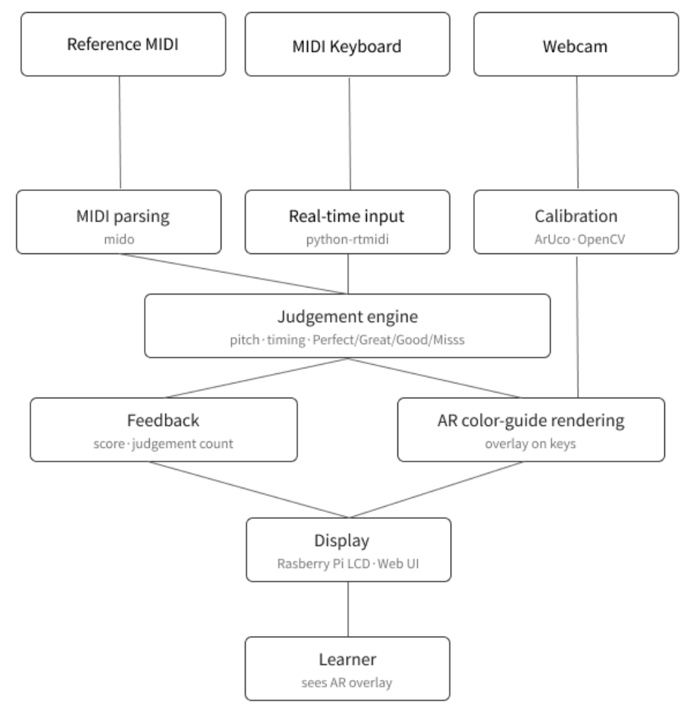
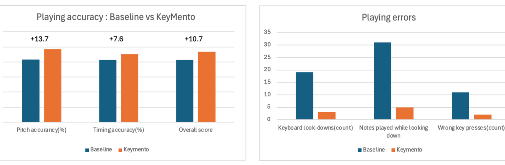
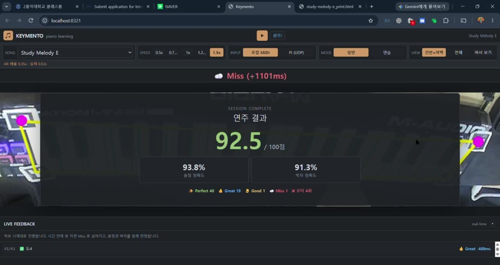

Idea & System Design · KeyMento 진행 중
악보 대신 건반 위에 다음 음을 띄우는 AR 피아노 학습 시스템 구상과 설계
출발점
- 피아노는 레슨 의존도가 높고, 혼자 연습할 때는 무엇을 틀렸는지 바로 알려 주는 사람이 없습니다.
- 기존 앱(Synthesia, Simply Piano)은 다음 음을 별도 화면에 보여 줘서, 연습하는 동안 화면과 손을 계속 번갈아 봐야 합니다.
아이디어
- 안내를 건반 위로 웹캠으로 건반을 인식해 다음에 칠 건반 위에 직접 원을 그리면, 시선을 옮기지 않고 칠 수 있습니다.
- 매 음마다 채점 맞음 · 틀림 개수가 아니라 음마다 등급과 타이밍 오차(ms)를 바로 보여 줘서 무엇을 고칠지 알 수 있게 합니다.
근거
- 스마트 피아노의 정량 피드백은 음정 · 박자 오류를 37% 줄였습니다(Xu & Zulkarnain, 2025). → 모든 음에 즉시, 등급으로 피드백
- 시선 고정이 적고 짧을수록 연주 정확도가 높았습니다(Lörch, 2021, 144명). → 안내를 건반 위에 두어 시선 이동을 줄임
| Synthesia | Simply Piano | KeyMento | |
|---|---|---|---|
| 즉시 피드백 | X | O | O |
| 피드백 형태 | 맞음 · 틀림 개수 | 파랑 · 빨강 음표 | 등급 + 오차(ms) |
| 다음 음 안내 | 떨어지는 음표 | 화면 속 건반 | 건반 위 AR 원 |
| 안내 위치 | 별도 화면 | 별도 화면 | 실제 건반 위 |

입력
정답 MIDI 파일, MIDI 키보드, 웹캠 세 가지로 나눴습니다.
처리
PC에서 두 갈래로 처리합니다. MIDI 파싱 → 판정 엔진, 캘리브레이션 → AR 렌더링
출력
Web UI와 Raspberry Pi LCD에 안내와 연주 결과 요약을 보여 줍니다.
- 캘리브레이션 ArUco 마커로 자동 인식하고, 마커가 없을 때는 네 점을 클릭하는 수동 방식도 두었습니다. 호모그래피로 카메라 화면을 건반 좌표에 맞춥니다.
- 판정 기준 음 높이가 맞는지와 타이밍 오차로 Perfect / Great / Good / Miss를 나눕니다.
- 두 가지 모드 맞게 칠 때까지 기다리는 연습 모드와, 템포대로 진행하는 일반 모드를 두었습니다.
- 점수 (음정 정확도 + 박자 정확도) / 2
예비 실험
- 같은 사람이 악보만 보고 칠 때(Baseline)와 KeyMento를 켜고 칠 때를 비교했습니다. 순서와 곡은 교차 배치하고, 곡은 Chiu & Chen(2012)의 난이도 지표 다섯 가지로 난이도를 맞췄습니다.
- 노트북 카메라로 시선을 추적했습니다. 참가자는 팀원 1명인 예비 실험이고, 본 사용자 실험과 논문을 준비하고 있습니다.
+13.7%p음정 정확도 (박자 +7.6%p, 종합 점수 +10.7)
19 → 3회건반을 내려다본 횟수
11 → 2회잘못 누른 건반 수
예비 실험 그래프 · 실제 화면 보기

